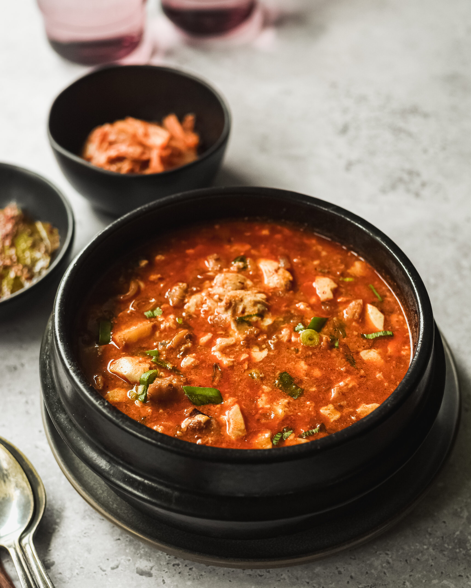

Soondubu Jjigae

Description
Sundubu jjigae is a Korean stew made with soft (uncurdled) tofu as a highlight ingredient.
There are a few different ways to make sundubu jjigae using different ingredients (e.g. kimchi, minced pork and seafood) but by far my favorite version is the seafood version known as Haemul Sundubu Jjigae (해물 순두부 찌개). You can really taste the refreshing and clear tasting soup.
In general, sundubu jjigae is a bit spicy though I think my recipe is in the modest pepper scale. Nevertheless, the spiciness of the stew can vary depending on the types of chili powder / chili flakes you use. Also, whether you used chili oil or neutral oil. A spicier version can potentially make you sneeze while you’re cooking and may even tickle your throat.
Nonetheless, it’s a refreshing, delicious and very comforting stew you can enjoy any time of the year!
Ingredients
Main
- 350g/12 ounces Korean soft tofu (sundubu)
- 110g/3.9 ounces littleneck clams or pipis, cleaned
- 3-4 banana prawns (80g/2.8 ounces), head, shells and guts removed
- 100g/3.5 ounces enoki mushrooms, bottom 4-5 cm stem removed and rinsed briefly in cold running water
- 2 small shiitake mushrooms (20g/ 0.7 ounces), cleaned, stem removed and thinly sliced
- 1 egg
- 1 stalk of green onion (10g/0.4 ounces), thinly sliced
Soup Base
- 1.5 cups dried kelp and anchovy stock
- 1 Tbsp Korean chili oil or neutral cooking oil
- 2 Tbsp Korean chili powder or Korean chili flakes (gochugaru)
- 1 tsp minced garlic
- 1/2 Tbsp Korean fish sauce
- 1/2 Tbsp Korean soup soy sauce or regular kikkoman soy sauce
- Fine sea salt, to taste
- A few sprinkles of ground black pepper
- A dash (about 1/2 tsp) of sesame oil
Steps
- Start heating the pot on the stove over medium low heat and add the chili oil, chili powder, and garlic. Stir them well for about 1 min. Make sure not to burn the chili powder.
- Add the clams and shrimps and stir quickly to coat them with the chili sauce. Add the fish sauce and soy sauce then stir.
- Add the dried kelp and anchovy stock and boil it on medium-high heat until it starts to boil rapidly (2 to 3 mins).
- Add the tofu, mushrooms, and egg and cook them for another 2 to 3 mins. Season with salt, if required.
- Top up with the green onion, black pepper and sesame oil. Serve hot with Korean rice and side dishes (banchan).